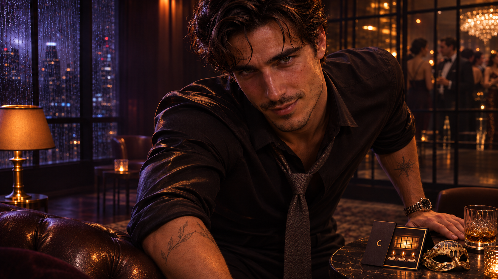
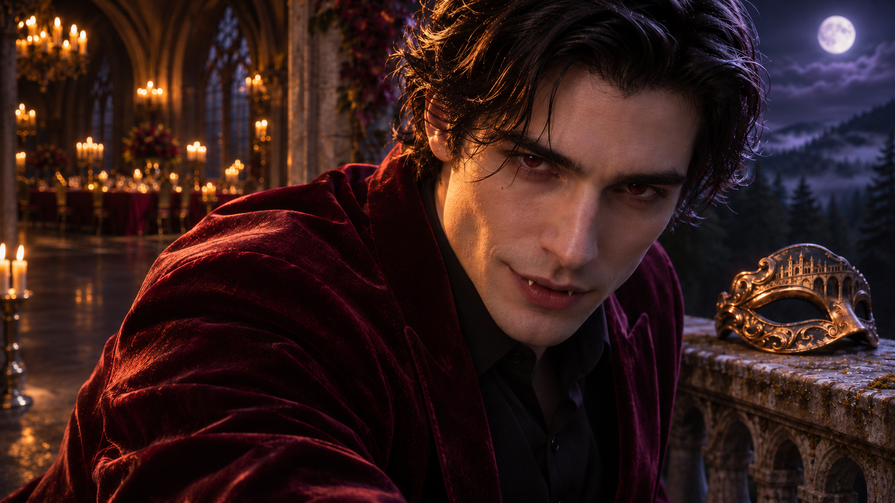
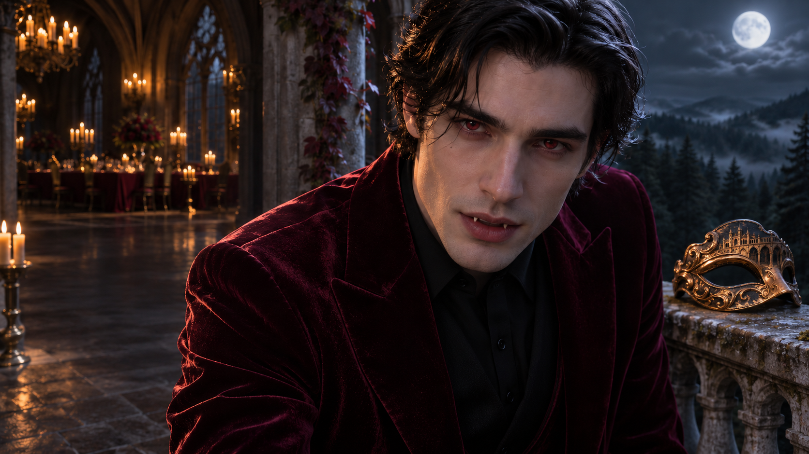
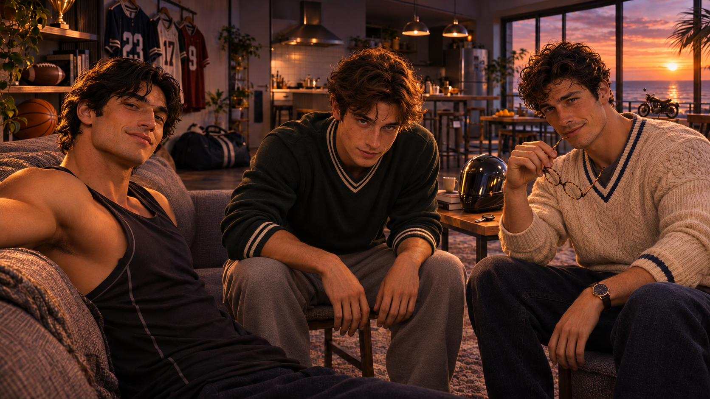
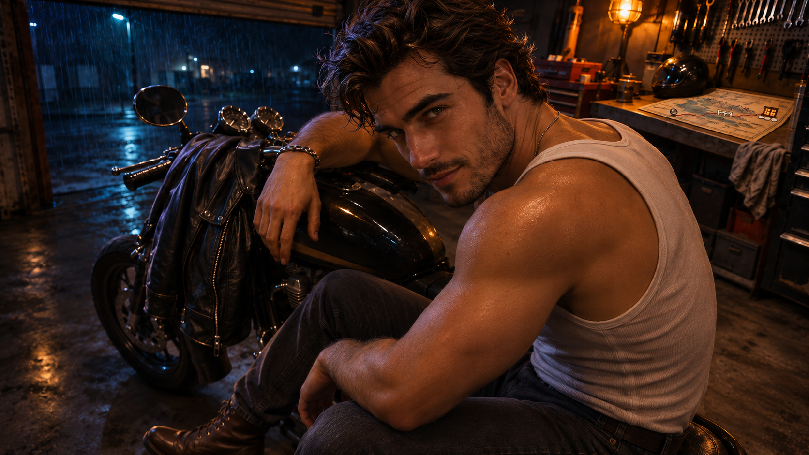
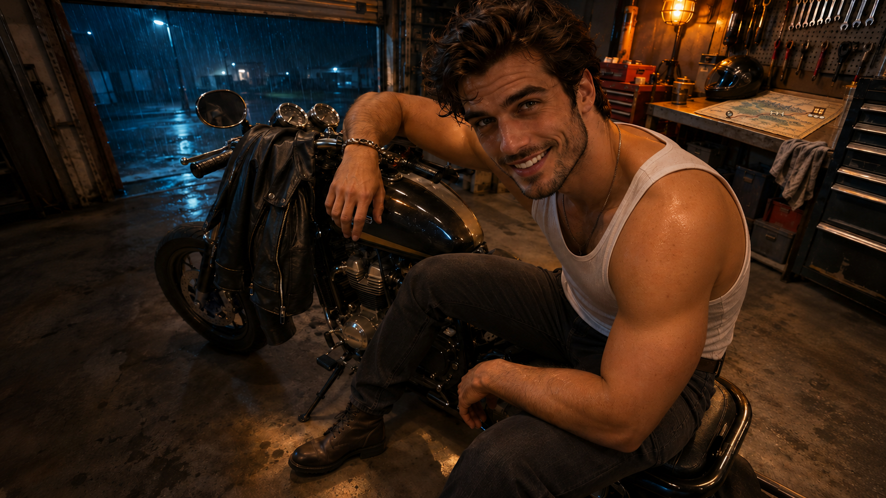
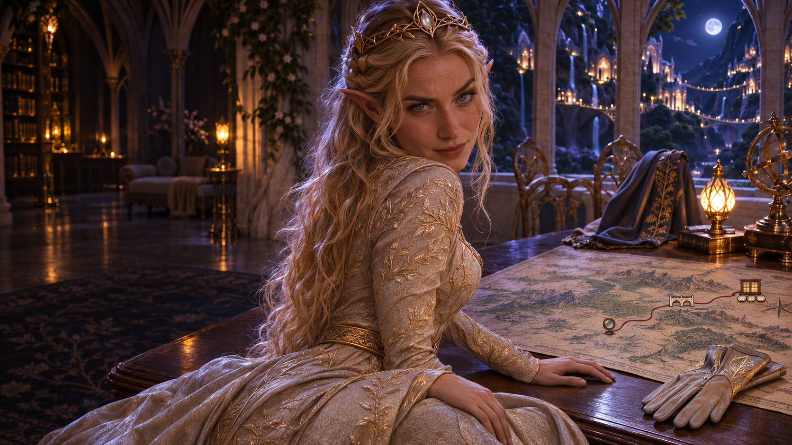
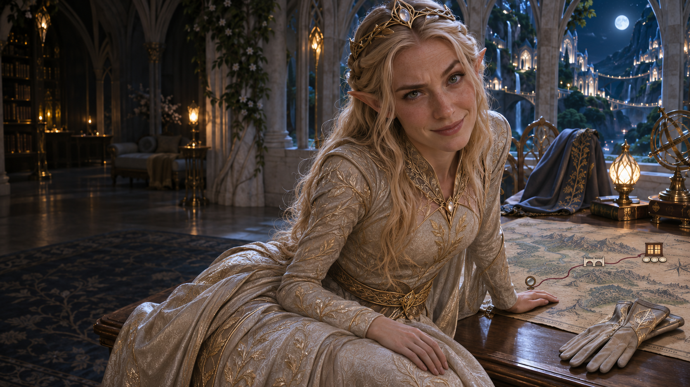
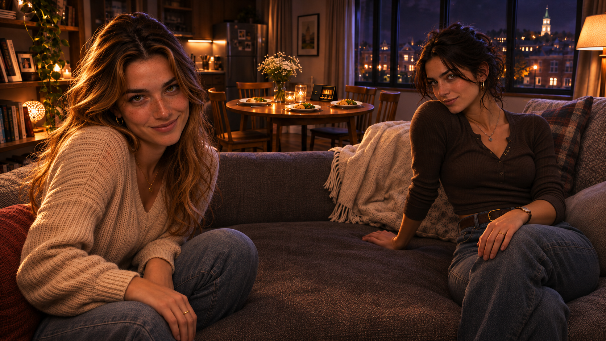

SHOT 03
The Private Club


A knowing challenge.
A diagonal lean, sustained eye contact and gold against the rainy violet city.

Held gazes. Off-axis poses. Candle-gold against violet night. Six character encounters, with their story clues kept in place.
Static style studies for review. The original 14-shot storyboard remains available. Compare each study with its previous r2 frame.

A diagonal lean, sustained eye contact and gold against the rainy violet city.


A restrained half-smile, a forward shoulder and wine-red velvet under candlelight.


Relaxed confidence, playful challenge and quiet amusement in the same room.


A lower viewpoint and a held gaze, framed by warm metal and a cold, rainy street.


An appraising look over the shoulder, gold embroidery and a moonlit city.


Two distinct expressions, layered distance and a warm welcome with anticipation.